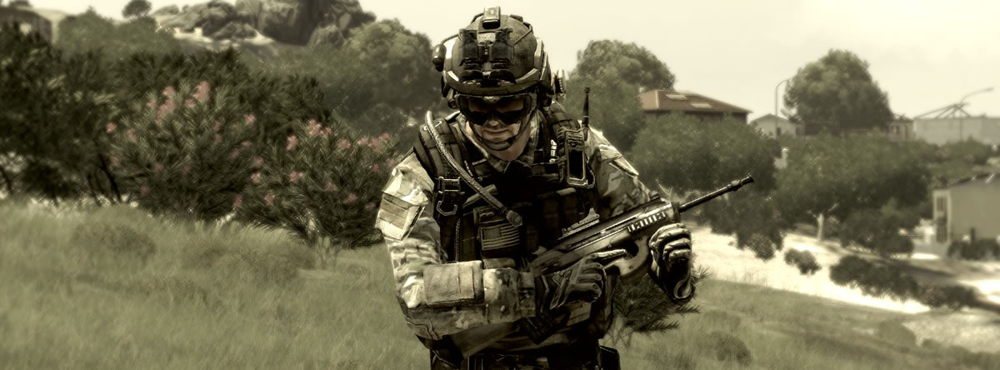

Nie da się zaprzeczyć, że mod DayZ znacząco przyczynił się do rozpoznawalności marki ArmA - wiele
osób nie wiedziałoby o istnieniu tej gry, gdyby nie Czarnoruś w wydaniu zombie. Część z nowych graczy
pozostała przy DayZ, część przeszła do ArmA2, a część zainteresowała się ArmA3 - i właśnie o tej ostatniej
napiszemy tutaj klika słów, gdyż z jej powodu pojawiło się u naszego progu trochę osób, którym musieliśmy pokazać
paluszkiem drzwi i poinformować, że na chwilę obecną na ArmA3 w GCT nie ma co liczyć.
Części z nas wydaje się, że m.in. dzięki DayZ Bohemia Interactive Studio dostrzegło, że może zwiększyć swój
udział w rynku poprzez skierowanie serii ArmA na odrobinę inne tory. Oczywiście nie jest to nic dziwnego,
każde przedsiębiorstwo nastawione jest na zysk i w interesie BiS jest zarobić jak najwięcej na swojej ciężkiej pracy.
Jednak każdy kij ma dwa końce - "hardcore'owym" fanom serii nie wszystkie z tych zmian odpowiadają.
Przedstawione tutaj poglądy są rzecz jasna subiektywne i każdy ma prawo się z nimi nie zgadzać, jednak z grubsza
opisują odczucia naszej grupy względem A3.
Content
W tej chwili ArmA3 daje zaledwie ułamek tego, co dawała w dniu premiery ArmA2. Mówimy tu zarówno o frakcjach, jednostkach,
broniach, wszelkiego rodzaju pojazdach i elementach otoczenia czy cywilach. Niestety, A3 nie pozwala naszym ani mission-makerom
na wykorzystanie ich potencjału i tworzenie misji równie szczegółowych jak te, do których jesteśmy przyzwyczajeni.
Setting
Wydaje się, że przesunięcie akcji gry do "niedalekiej przyszłości" bardziej jej zaszkodziło, niż pomogło. Gracze i społeczności
ArmA zazwyczaj trzymają się tej serii ze względu na realizm i na możliwość odtwarzania lub "symulowania" w niej wydarzeń
które miały lub mają miejsce. ArmA3 nas tej możliwości pozbawia, gdyż w chwili obecnej pozwala
na kreowanie sytuacji, które dopiero będą mogły się kiedyś wydarzyć. Jest to poważny cios dla graczy ArmA, którzy dużo bardziej
niż zdalnie sterowane mini-helikopterki cenili sobie M4 czy AK-74 z celownikiem mechanicznym. Zamiast zabawy
"w rzeczywistość" dostaliśmy garść broni, pojazdów i gadżetów, które przeważnie albo nie zeszły z desek kreślarskich, albo daleko im
do powszechnego użycia. Wydaje mi się, że gdyby gracze byli zainteresowani taką tematyką, to do ArmA2 powstałyby mody pozwalające
na zabawę w "niedalekiej przyszłości" - a takich jest jak na lekarstwo. Cóż, ktoś nas uszczęśliwia na siłę.
Mody
ArmA2 daje duże pole wyboru z szerokiego wachlarza modów dostępnych na fanowskich stronach internetowych (np. Armaholic) - do tego
stanu jest jeszcze ArmA3 bardzo daleko. Zdecydowana większość z nas nie wyobraża sobie gry bez znakomitego moda ACE2, czego
na dzień dzisiejszy A3 nie jest nam w stanie zapewnić. Fakt, prawdopodobnie ACE3 jest w trakcie, lecz sporo wody w Wiśle upłynie,
zanim położymy nasze łapska na sprawnie działającej wersji.
Podsumowanie
Wymieniłem trzy grzechy główne ArmA3. Być może za jakiś czas modderzy doprowadzą A3 do stanu w którym będzie grywalna, jednak na chwilę
obecną nasza ekipa nie wyraża zainteresowania przejściem na najnowszą odsłonę serii. Nie zapowiada się też, aby migracja wydarzyła się w
2014 roku, więc jak na razie zainteresowanych rozgrywką w A3 odsyłamy do innych grup.